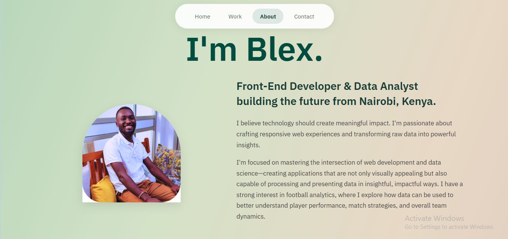

Aviation Analytics Dashboard
Data Science • Python • Tableau

Python
Pandas
Tableau
SQL
Comprehensive analysis of aviation data to identify performance trends, optimize routes, and predict maintenance needs.
Movie Success Predictor
Machine Learning • Data Analysis

Python
Scikit-learn
Matplotlib
Jupyter
Built predictive models to analyze movie success factors including box office performance, ratings, and audience demographics.
Web Development
Personal Website • portofolio

HTML5
CSS3
JavaScript
Responsive
Custom-built personal portfolio website showcasing web development and design skills with responsive layouts and animations..
Machine Learning
Churn Prediction

Python
Scikit-learn
Matplotlib
Jupyter
Interactive dashboard analyzing customer churn and predicting risk levels using advanced data visualization techniques.